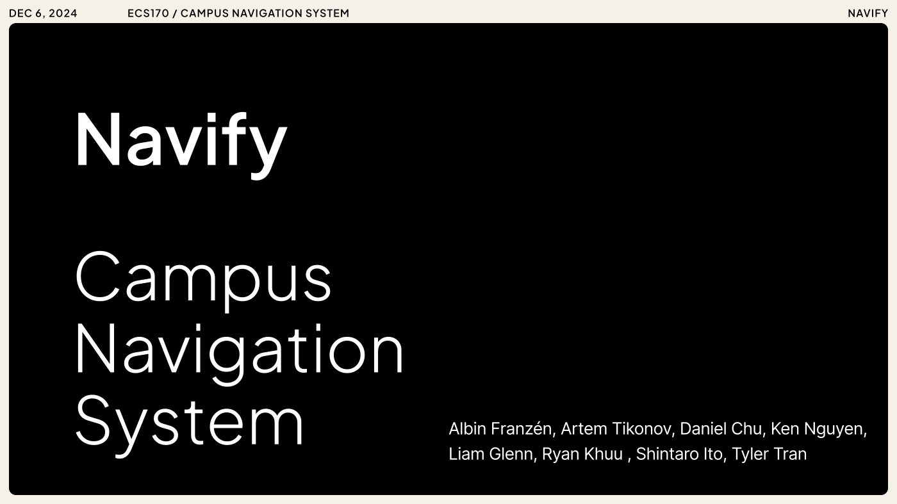
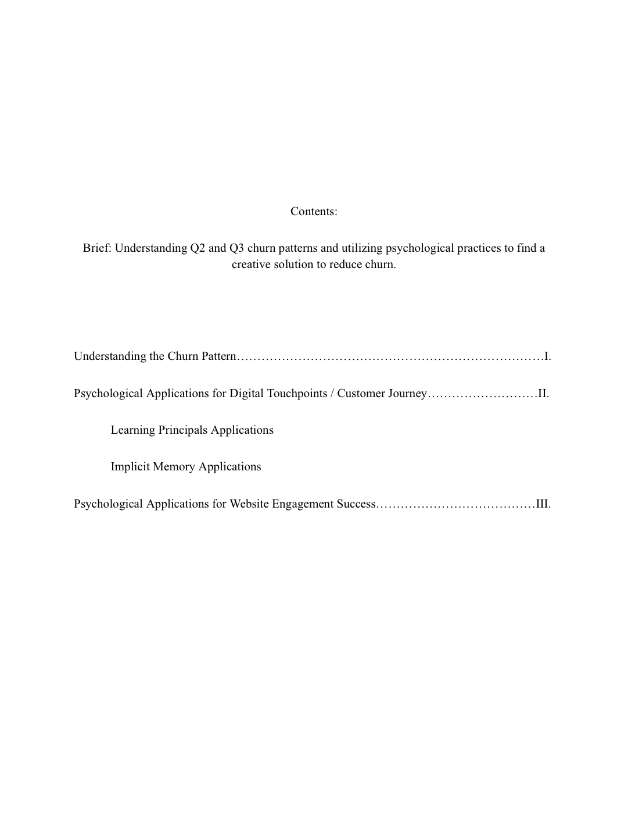
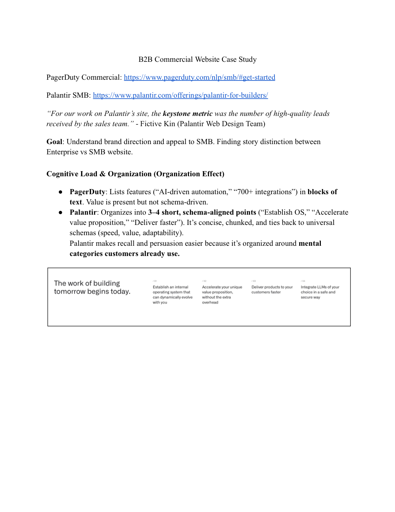
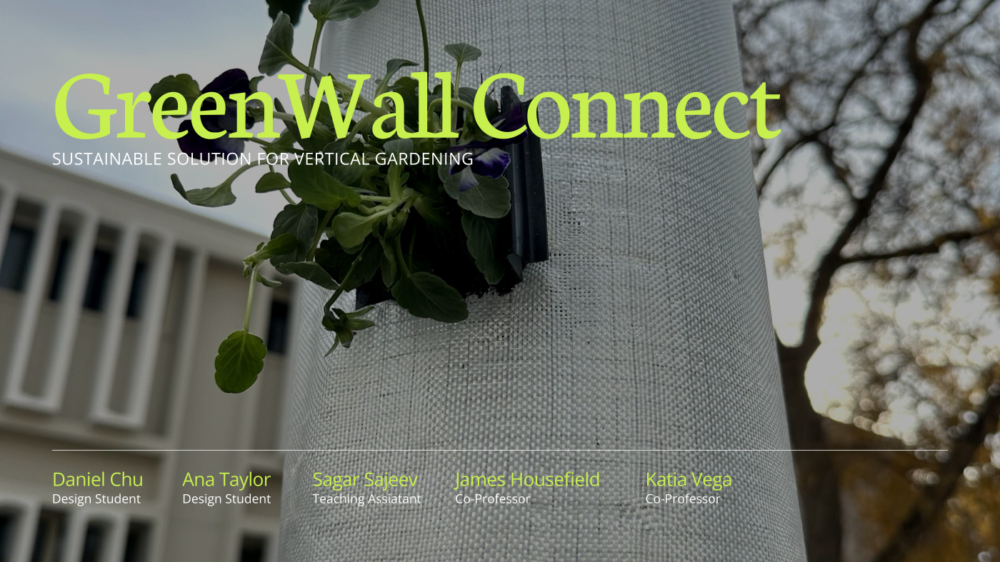

Portfolio Work
Selected college and internship projects
Preview and open a few of the decks, studies, and design documents.

Digital Touchpoints Analysis
Research-driven analysis of digital interactions, customer experience, and communication flow.
Open PDF
Website Engagement Study
A study focused on user engagement patterns and what drives stronger interaction online.
Open PDF
Final Green Wall
A product development project exploring the design process of a sustainable product.
Open PDF